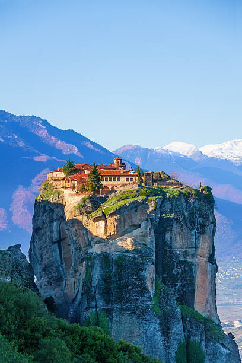

Fact Attack: Prepare to Be Stunned by These Truths
Fact: The Sahara Desert is the largest hot desert in the world, covering an area of over 9.2 million square kilometers (3.6 million square miles) across North Africa.
Despite its harsh and arid conditions, the Sahara is home to a variety of plants and animals specially adapted to desert life, including camels, desert foxes, and acacia trees. The Sahara experiences extreme temperature variations, with scorching hot days and freezing cold nights. It is also known for its vast sand dunes, some of which can reach heights of over 180 meters (590 feet). Despite its inhospitable environment, the Sahara has a rich history and has been inhabited by humans for thousands of years.